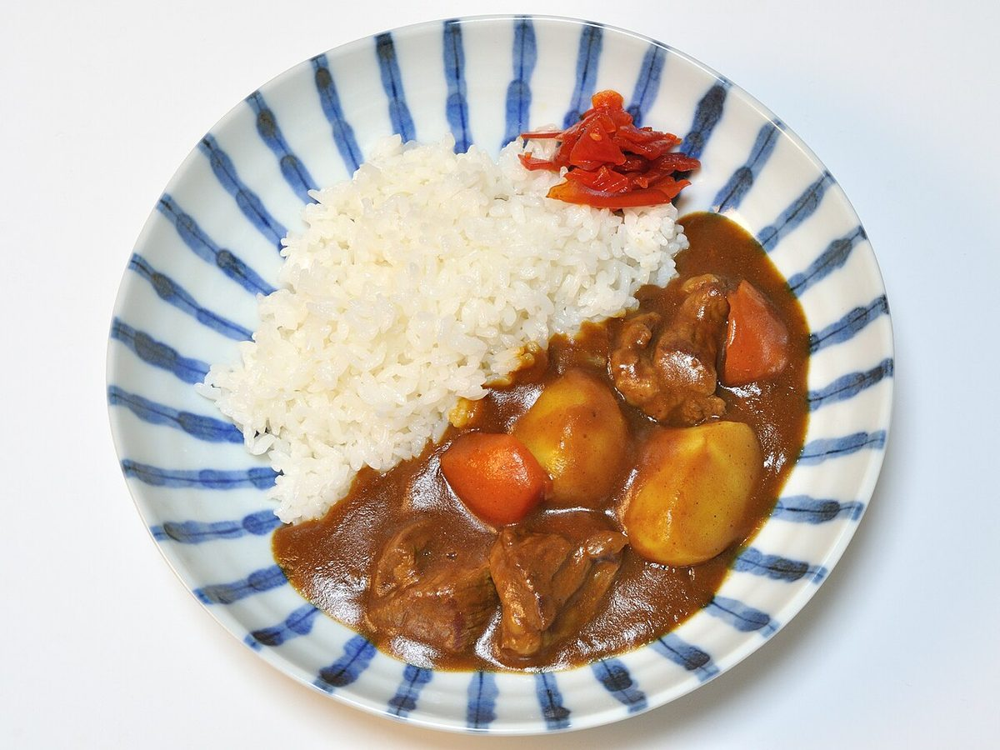
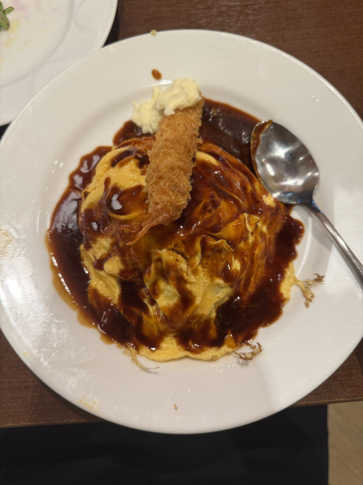
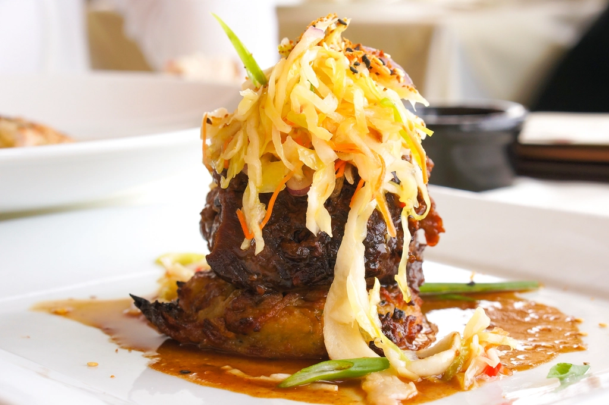

01 SAUCE
ソースは、三日かけて。
牛すじと野菜を三日間じっくり煮込んだ、自家製のデミグラスソース。この店の味のもとです。(見本の文章です)
02 CURRY
毎日食べたい、カレー。

スパイスをきかせつつ、毎日食べても飽きないやさしい味に。ご飯に合う、昔ながらのカレーです。
03 FAMILY
家族みんなで。
お子さま連れのお客様も大歓迎。小さなサイズのメニューもご用意しています。
写真・店舗名・内容はすべて見本用の架空のものです
Yoshoku Marumi
デミグラスソースは、三日かけて煮込みます。
ご挨拶
オープンして20年、家族でやっている小さな洋食店です。ハンバーグもオムライスも、ソースから手づくりしています。
お子さま連れも大歓迎。ご家族の記念日にも、ひとりのランチにも、気軽にお立ち寄りください。
おすすめ

肉汁たっぷり、自家製デミグラス。
¥1,500
ケチャップライスを、とろとろ卵で。
¥1,300
サクサクのカツに、スパイス香るカレー。
¥1,400GALLERY



01 SAUCE
牛すじと野菜を三日間じっくり煮込んだ、自家製のデミグラスソース。この店の味のもとです。(見本の文章です)
02 CURRY

スパイスをきかせつつ、毎日食べても飽きないやさしい味に。ご飯に合う、昔ながらのカレーです。
03 FAMILY
お子さま連れのお客様も大歓迎。小さなサイズのメニューもご用意しています。
VOICE
「ハンバーグがジューシーで、ソースの味が忘れられません。」
30代・男性(イメージ例)「子どもがオムライスを完食しました。また家族で来ます。」
30代・女性(イメージ例)「昔ながらの味で、ほっとするお店です。」
60代・男性(イメージ例)ACCESS
お問い合わせ
000-0000-0000